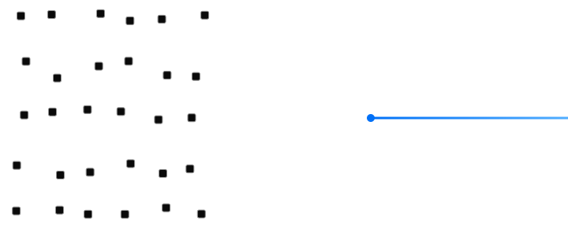

Moving 30 AI agents onto one secure, reviewed release path.

30 agents, built 30 ways One reviewed pathThis document is a mock prepared for interview purposes. It is not an official Vercel publication, and Vercel has not reviewed or endorsed it. GoodEnough Home Insurance is a fictional company. The Vercel name and logo are trademarks of Vercel, Inc.
01Executive summary
GoodEnough Home Insurance runs about 30 AI agents, each built by a different team in its own way. One reviewed path on Vercel would take a new agent from idea to production in an estimated 3 weeks instead of 12, and remove every standing credential the agents hold today.
| Capability | Problem→ | Outcome→ | Value |
|---|---|---|---|
01No stored passwords |
Agents bypass Vault with static passwords and keys. | A per-deployment identity; database access that expires in minutes. | Nothing to steal or rotate. |
02Approvals that hold |
A redeploy loses pending approvals; anyone can say “approved”. | A different person approves every change and the request waits until they do, through any update. | Every change has a named requester and approver. |
03One route to AI models |
Each team manages its own keys, and one provider’s outage stops an agent. | AI Gateway, with automatic failover between providers. | No model keys. No single point of failure. |
04A gate before release |
Nothing is tested before it goes live. | Every version is tested before it can ship. | Broken builds can’t ship. |
Approve a pilot of the golden path.
Two agents move first. The pilot proves the approach on GoodEnough’s own systems and replaces this paper’s estimates with measured results before anything wider is committed.
02The problem
Today, how fast an agent reaches production depends on its plumbing, not on the business idea behind it. Every team rebuilds the same plumbing, and every agent waits on a security review that starts from scratch.
Agents hold database passwords and model keys that never change.
CostExposure on every live agent, around a control GoodEnough mandates.
Each agent has its own access rules, and some live only in a prompt.
CostAbout 3 weeks of review per agent.
Approval queues are hand-built. A redeploy loses a pending approval, and a retry applies a change twice.
CostClaims work redone, or done twice.
One agent accepts the word “approved” from anyone, including text inside a claim note, and records itself as the approver.
CostChanges to claims with no accountable person.
Nothing tests an agent before it goes live.
CostA change that breaks a rule reaches production.
Every new agent repeats about 12 weeks of plumbing and review. The agents already live carry standing credentials, policyholder identifiers reaching a model, and changes nobody approved.
03The outcome
GoodEnough keeps the systems it trusts. Vercel takes over the work every team was rebuilding between an agent and those systems.
Agents on Vercel use GoodEnough’s existing systems: Vault, the claims database and the identity provider. None of them moves, and nothing is stored on either side.
Vercel takes the place of what every team hand-built: approval queues, retry loops, nightly-job wrappers, model keys and routing, preview environments and a release gate.
| System | Why it stays |
|---|---|
| Vault | GoodEnough’s root of trust, and already mandated. It needs persistent storage and to be always on. |
| Claims database | The system of record. No database credential is ever stored on Vercel; Vault issues one per step. |
| Identity provider | Who a user is, and whether they may approve, comes from GoodEnough’s directory. |
| Audit log | Remains the record of who received which credential, joined to each agent step. |
04The value
The return comes from time each agent no longer spends on plumbing and security review. Across 30 agents, that is an estimated 330 to 360 weeks.
Estimated delivery and review time saved across 30 agents: about 9 weeks of delivery and 2 to 3 weeks of security review per agent. Estimate
Each migration is one pull request, so value starts with the first agent rather than at the end of a long rollout.
Alongside the time saved, the golden path removes risks that GoodEnough carries today on every live agent.
| Measure | Today | Golden path | What it means for GoodEnough |
|---|---|---|---|
| Standing secrets held by agents | 4, never rotated | 0 | No password or key to steal, rotate or leak. |
| Lifetime of a database credential | Indefinite | One step; 10-minute ceiling | A leaked credential expires within minutes. |
| Changes with a named requester and a different approver | 0% | 100% | Every change to a claim traces to two named people. |
| Pending approvals lost in a release | All of them | None | A release never discards a supervisor’s pending decision. |
| Releases tested before going live | None | Every release | A change that breaks a rule cannot be promoted. |
| Incidents involving agent credentials, unapproved changes or exposed policyholder identifiers | From GoodEnough’s incident log | 0 on migrated agents | Measured from the incident log, tagged by agent. |
05Path to value
Agents move one at a time, read-only agents first. Each migration is a single pull request with its own exit tests.
The migrated agent runs beside the legacy one, on test data only.
Exit testBoth answer the same prompts.
Shared cases score both agents. Security reviews one configuration block. A supervisor approves a real change.
Exit testEvery case passes; security signs off.
A Rolling Release sends a small share of traffic, or one pilot team, to the new agent.
Exit testNo rise in errors or refusals; approvals complete.
All traffic moves. The legacy agent’s routes are disabled.
Exit testA full business day with no fallback to legacy.
Rollback at any stage. Instant Rollback returns to the previous deployment, and pending approvals are not lost. The legacy agent’s access is disabled, not deleted, for two weeks, and one switch stops all changes at once.
| eve is a release candidate | Plan for API changes, and keep the AI SDK paths available as an alternative. |
| Short-lived credentials need watching | A fault that leaves database users behind makes every agent fail closed. A monitor on leftover users is part of the rollout. |
| Tests reduce risk; they do not remove it | Models vary run to run, and tests check what an agent says and writes. People still review each preview. |
06Next step
One agent that only reads and one that changes records, so both kinds of migration are proven before the other 28.
AAppendix
Three primitives carry the design. Each removes a whole class of work that GoodEnough’s teams were doing alone.
| Primitive | What it does here | Why | Trade-off |
|---|---|---|---|
| OIDC federation into Vault | Vercel signs a token for every deployment. The agent logs in to Vault with it and gets a database user for one step. | Removes every standing secret. Vault’s bound claims keep previews on test data. | Vault must be configured once to trust Vercel’s issuer, and be reachable from Vercel. |
| Vercel Workflow, through eve | Runs each conversation as a durable workflow: sessions, approvals, channels and tests. | A change that waits days for a person survives restarts and redeploys, with no queue to build. | eve is a release candidate. Each eve agent is its own service, which counts against function limits. Steps must be idempotent. |
| AI Gateway | One endpoint for every model, authenticated by the deployment, with a fallback model on another provider. | No model keys to issue, rotate or leak. One provider’s outage does not take an agent down. | One more hop, and a dependency on the gateway’s model catalog. |
| Primitive | What it does here | Trade-off |
|---|---|---|
| Preview deployments and Deployment Checks | Every push gets a deployment, and the test suite runs against it: all 21 tests on a preview, and the 15 that neither write nor need test data on a production build. The result is a required check before promotion. | Adds minutes to each release. Three tests are graded by a model, so they can vary; they run on previews only. |
AI SDK (ToolLoopAgent, WorkflowAgent) | Paths for agents that should not move to eve: a read-only, one-request agent stays simple, and an agent inside an existing app keeps its routes and UI. | Three paths to support, not one. |
| Deployment Protection with Trusted Sources | Previews are private. CI reaches them by proving identity, not with a bypass secret. | More moving parts when a request is refused. |
| Vercel Connect, the eve sandbox, the Marketplace | A GitHub App with no stored key; legacy code is read in the sandbox and never run; Neon Postgres from the Marketplace. | None significant for the design. |
BAppendix
Today’s values describe three agents built the way GoodEnough’s teams build them now.
| Measure | Today | Target | How it is measured |
|---|---|---|---|
| Standing secrets held by agents | 4 (3 database passwords, 1 model key shared by 2 agents), never rotated | 0 | Secret-valued variables on agent projects |
| Lifetime of a database credential | Indefinite | Revoked at the end of each step; 5-minute default, 10-minute ceiling; none while a change waits | Vault lease TTLs and audit log |
| Changes with a named requester and a different approver | 0% | 100% | requested_by ≠ approved_by on each change |
| Pending approvals lost across a deploy | All | 0 | Approve-after-redeploy test each release |
| Tests passed before promotion | No gate | 21 of 21 on the preview; 15 of 15 on the production build | Deployment Check status |
| Database users left after a step | Not tracked | 0, with an alert above 0 | Vault-issued roles in Postgres |
CAppendix
Adjusters and supervisors reach the agents through a web application on Vercel. This appendix covers the Next.js and Vercel fundamentals that make it fast to load, and where each is configured.
Every page is split in two at build time. A static shell is built once and served from Vercel’s CDN, so it arrives before any function runs; whatever depends on the request streams into the same response when it is ready.
All nine pages are partially prerendered, and none is rendered entirely on demand. A signed-in site would normally give this up, because reading a cookie makes the whole page dynamic. Here the cookie is read only inside the streamed parts, so personal pages still get a cached first paint.
| Page | Prerendered shell | Streams in at request time |
|---|---|---|
| Home | Header, hero, page copy | Account card, suggested next steps |
| Assistant | Page frame and chat skeleton | The viewer and their conversation |
| Data | Headings and table skeleton | Policy records the viewer may see |
| Phone | Explainer and phone skeleton | The phone, with its owner’s name and text messages |
| Document pages | Page frame | The document, from a cache |
| Sign-in | The whole form | Only a check that sends a signed-in visitor home |
| Fundamental | Configured in | What it buys |
|---|---|---|
| Streaming | <Suspense> in the layout and each page | The slowest query never holds up the rest of the page. |
use cache and cache lifetimes | lib/readme.ts, site-footer.tsx | Documents are cached and refreshed in the background every five minutes. A visitor never waits on GitHub, and an edit needs no redeploy. |
| Partial prefetching | partialPrefetching | A link in view prefetches only the next page’s static shell, so a tap paints at once and no function runs for a page nobody opens. |
| Routing Middleware | proxy.ts | The sign-in check runs before any page renders. |
| Vercel Functions with Fluid compute | Every route handler and both agent services | Replies stream for as long as they need. Routes share functions, which keeps the project within its plan’s function count. |
| Code splitting | next/dynamic in the assistant | The chat client, markdown renderer and code highlighter load after the page is interactive. |
next/font | app/layout.tsx | Fonts are self-hosted with size-matched fallbacks, so text does not shift when they load. |
| React Compiler | reactCompiler | A streaming chat reply re-renders only the message that changed. |
| Speed Insights and Web Analytics | app/layout.tsx | Core Web Vitals from real visits, by page and device: the measure of record for speed. |
| File tracing | outputFileTracingIncludes | Each document ships with its function, so it still renders if GitHub is unreachable. |
Paths are relative to apps/web; flags are set in next.config.ts.
JavaScript sizes from production builds. Layout at phone width in a browser and in Safari on an iPhone simulator.
Load time on a real phone or a slow network. Speed Insights on the live site is where those numbers come from.
DAppendix · Notes and assumptions
This paper is a mock prepared for a Vercel Solutions Architect interview. It is not an official Vercel publication, and Vercel has not reviewed or endorsed its content, figures or recommendations. GoodEnough Home Insurance is a fictional customer, and all data in this paper and its supporting build is synthetic. Technical baselines describe three agents built the way GoodEnough’s teams build them today. Business baselines are assumptions for a regional insurer of this size; the first week of the engagement replaces them with GoodEnough’s own figures.